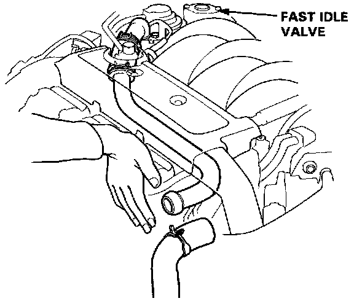
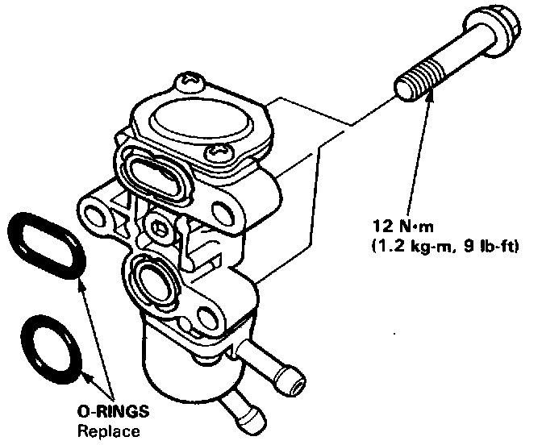

Auxiliary Air Valve (Idle Speed): Testing and Inspection
InspectionNOTE: The fast idle valve is factory adjusted; it should not be disassembled.
1. Start the engine.

2. Remove the hose from pipe. Put your finger over the pipe and check for air flow (vacuum) with the engine cold (coolant temperature below 300°C, 86°F) and idling.

- If no vacuum is felt, replace the fast idle valve and retest.
4. Warm up the engine (cooling fan comes on).
5. Check that the valve is completely closed. If not, air suction can be felt in the valve pipe.
- If any suction is felt, the valve is leaking. Replace the fast idle valve and recheck.